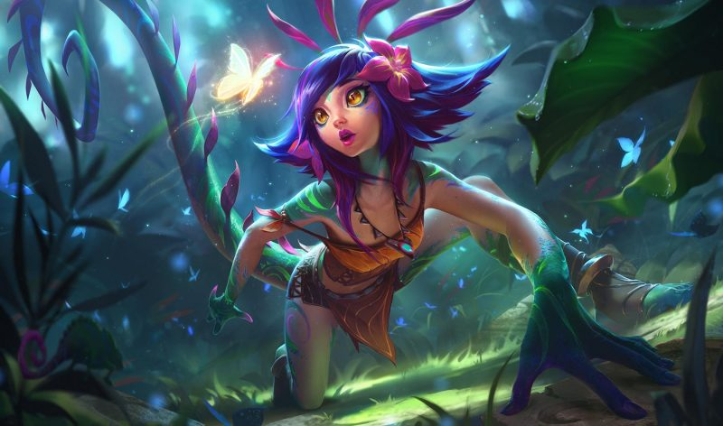

Últimas notícias
tinowns decidiu que quer jogar em 2026 e paiN surge como interessada.
OFICIAL! 🚨 No Patch 25.23, a Neeko perderá a sua passiva
Yiok 🇧🇷 foi banido PERMANENTEMENTE de todos os jogos da Riot Games por sua má conduta e falas problemáticas
Início
Redação
Contato
Sessão de comentários
zezinho: uau!
luizinho: eita
pedrinho: caraca
joaninha: puxa
joaozinho: nossa!
dinho: orra
Digite seu comentário:
>______________
Riot removerá uma das mecânicas mais polêmicas na Neeko
O que parecia questão de tempo acabou se confirmando na última quarta-feira (13).

A interação da Neeko com o Minion Canhão, a famosa “catapa”, onde a campeã pode virar a unidade e absorver vários tiros da torre ainda nos primeiros níveis do jogo, será retirada do League of Legends na próxima atualização.